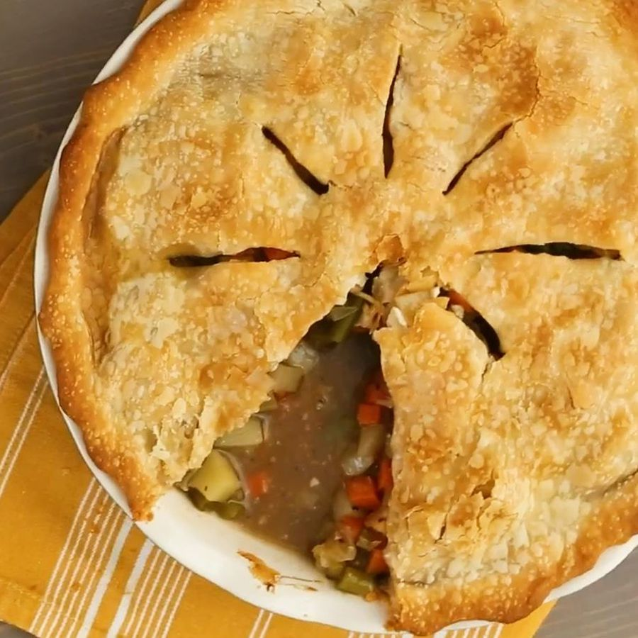

Vegetable Pot Pie
\
This mouthwateringly delicious pot pie is vegetarian.
Ingredients
- 2 tablespoons olive oil
- 8 ounces mushrooms, sliced
- 1 onion, chopped
- 1 clove garlic, minced
- 2 large carrots, diced
- 2 potatoes, peeled and diced
- 2 stalks celery, sliced 1/4 inch wide
- 2 cups cauliflower florets
- 1 cup fresh green beans, trimmed and snapped into 1/2 inch pieces
- 3 cups vegetable broth
- 1 teaspoon kosher salt
- 1 teaspoon ground black pepper
- ¼ cup water
- 2 tablespoons cornstarch
- 2 tablespoons soy sauce
- 1 (14.1 ounce) package double-crust pie pastry, thawed
Steps
- Preheat the oven to 425 degrees F (220 degrees C).
- Heat oil in a large skillet or saucepan. Add mushrooms, onions, and garlic; cook for 3 to 5 minutes, stirring frequently. Stir in carrots, potatoes, and celery. Stir in cauliflower and green beans; add vegetable broth and bring to a boil. Reduce heat and simmer until vegetables are just tender, about 5 minutes. Season with salt and pepper.
- Mix water, cornstarch, and soy sauce in a small bowl until cornstarch is completely dissolved; stir into vegetables and cook until sauce thickens, about 3 minutes.
- Roll out 1/2 of the dough to line an 11x7-inch baking dish. Pour vegetable filling into the pastry-lined dish. Roll out remaining dough; arrange over filling, then seal and flute the edges.
- Bake in preheated oven until pie is golden brown on top, about 30 minutes.